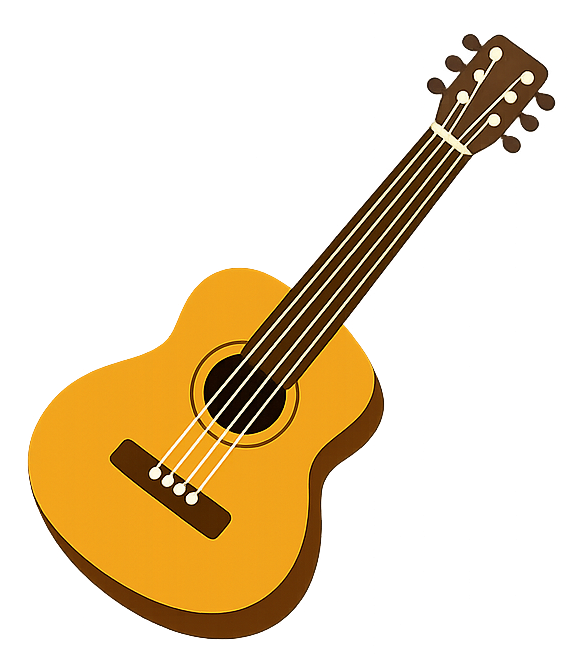
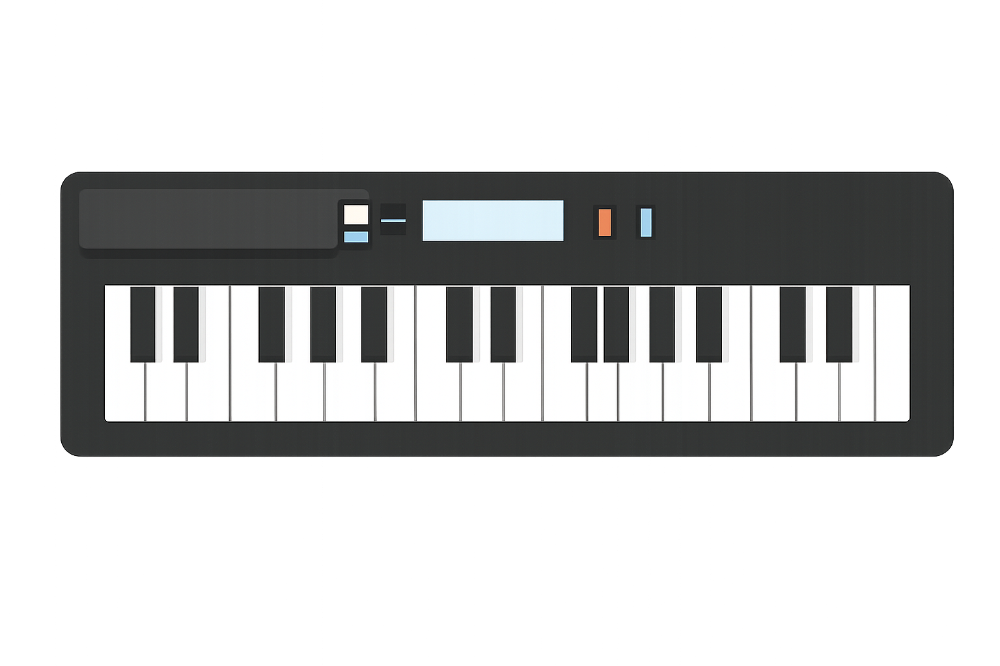
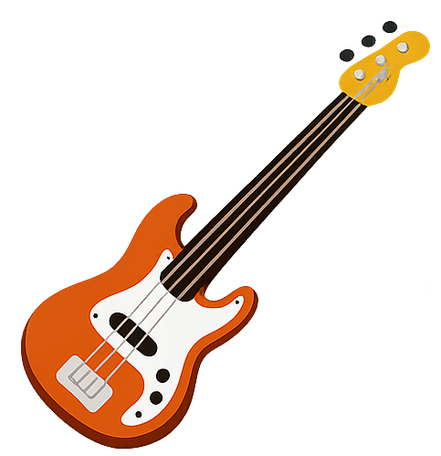
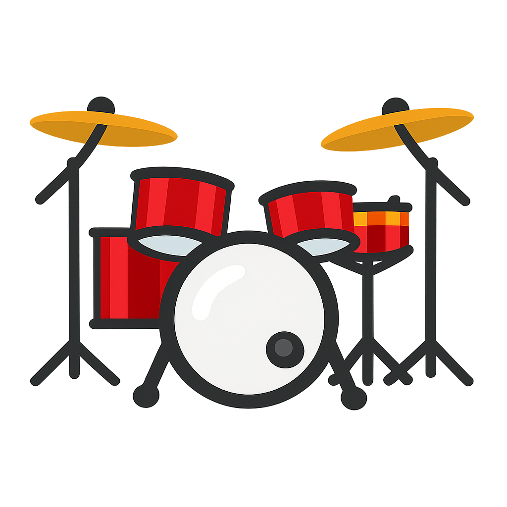

Cursos
Nossa escola de música oferece cursos voltados para pessoas que estão tendo seu primeiro contato com um instrumento. Trabalhamos com violão, teclado, baixo e bateria, proporcionando uma base sólida para quem deseja iniciar sua jornada musical. Os cursos são divididos em dois módulos, desenvolvidos ao longo de 1 (um) ano. Cada módulo tem a duração de 6 meses, permitindo que o aluno evolua gradualmente, consolidando seus conhecimentos e habilidades de forma prática e envolvente.
Violão

Teclado

Contrabaixo

Bateria

Módulo Básico 01
Este módulo foi cuidadosamente elaborado para pessoas que nunca tiveram contato com um instrumento musical e desejam iniciar sua jornada no universo da música. A proposta é oferecer uma introdução acessível e acolhedora, permitindo que qualquer iniciante se sinta confortável ao dar seus primeiros passos. Durante as aulas, trabalharemos técnicas de musicalização que ajudam a desenvolver percepção auditiva, coordenação motora e sensibilidade rítmica. Além disso, serão apresentados os princípios fundamentais do instrumento escolhido, com explicações simples e práticas para que o aluno compreenda sua estrutura e funcionamento. Também será oferecida uma introdução à harmonia e ao ritmo, de forma leve e gradual, criando uma base sólida para o aprendizado futuro. O objetivo é despertar o prazer de tocar e mostrar que a música pode ser uma experiência transformadora desde o primeiro contato.
Módulo Básico 02
Este módulo é voltado para pessoas que já possuem alguma experiência com o instrumento, mas sentem que estão estagnadas em seu desenvolvimento. Muitas vezes, após aprender o básico, o estudante encontra dificuldades para evoluir e acaba repetindo sempre os mesmos padrões. Aqui, o foco é justamente desbloquear esse processo, oferecendo conteúdos que aprofundam o entendimento de harmonia e ritmo. O aluno aprenderá a reconhecer progressões harmônicas mais complexas, explorar variações rítmicas e aplicar esses conceitos na prática musical. Além disso, trabalharemos exercícios que estimulam a criatividade e a improvisação, ajudando o estudante a se expressar com mais liberdade e confiança. O módulo também incentiva a construção de repertório, mostrando como aplicar os novos conhecimentos em músicas reais, tornando o aprendizado mais dinâmico e motivador. Ao final, o aluno terá não apenas mais técnica, mas também uma visão mais ampla e consciente da música como linguagem.